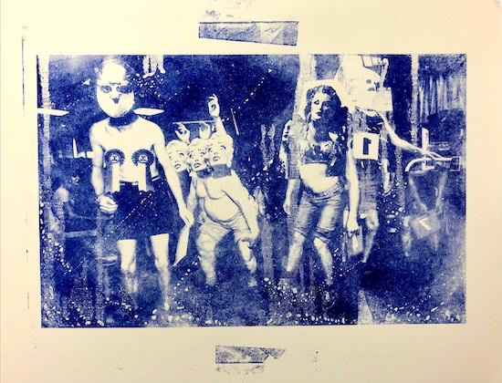
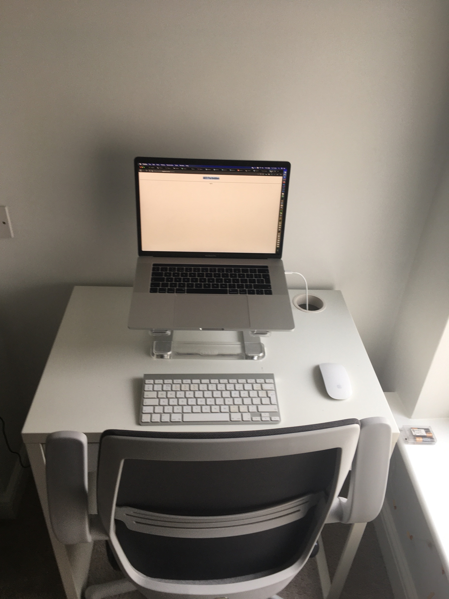

Tatiana Mac: On morality, hero worship, and why judgment isn’t helpful (a really thoughtful read on hero worship and not allowing people flaws)
Controversial, and not sure I’d be quite so sanguine about the opportunities this affords the right, but Larry Elliot always worth reading on Brexit — The left must stop mourning Brexit – and start seeing its huge potential: www.theguardian.com/commentis…
This is good on getting tone right in UI: A11yAdvent Day 20: Content & Tone
Larry Elliott | The Guardian: Four-day week would be affordable for most UK firms, says thinktank
This is a really good intro to static site generators (with a few specific warnings about Hugo). They’re not really for beginners and aren’t simple:
Drawing and storing the sun:
https://www.bbcelite.com/deep_dives/drawing_the_sun.html
(in Elite, this is an awe inspiring website)
Algorithms in 2020: themarkup.org
Worrying trend I’m noticing at work. Lots of orgs and people who should know better starting to publish jpgs and PDFs instead of web pages, or asking for interactive PDFs instead of, you know, a form.
We fought wars for this 😞
Ah, fantastic. And what better time for some horror than Xmas? Radio 4’s modern Lovercraft adaptations are out of this world:
He (McDonnell) might have the same, if not more, disconcerting past. But whereas Corbyn is described as the “wet rag,” McDonnell is the “bank manager” with a strong grip.
Lost opportunity.
Larry Elliot is the only Guardian journo I read on Brexit. Worth noting his opinion that no deal isn’t as disastrous as Greece exiting in 2015:
Jacobin, Matt McManus: Why the Contemporary Right Loves Nietzsche (and Heidegger and Schmitt)

Current thinking on tech stacks:
Jekyll is OK with a couple of plugins for taking a json file and converting it to data and pages. But, you can’t paginate data collections in Jekyll. So I think that’s a good reason to use 11ty.
Headless CMS + Netlify forms and no Netlify build is a sweet spot of speed, security, cost, editorial functionality and interactiveness.
David Squires on Millwall and taking a knee. Oof:
www.theguardian.com/football/…
Barney Ronay’s take was excellent too:
Would it still be useful to read the HTML 3.2 specification—from 1997?
Well, it’s quite interesting. Tables were OK for layout according to the spec at one point:
Blog (Web Development, Mostly) · Jens Oliver Meiert, Jens Oliver Meiert: Notes on HTML 3.2
We should be borrowing zillions and there is no such thing as a national credit card. But we don’t think that because economics discussion is a part of the news cycle:
Stumbling and Mumbling: News versus emergence
I’m liking micro.blog a lot. One very nice feature is that you can hide your posts from your own micro.blog by creating a robots.txt file and disallowing all indexing.
As to why you’d want to do this…
Tony Hsieh’s American Tragedy — obviously, this is very sad. But — my god! — the idiocy of how the story’s framed and the lunacy of the world of the super-rich. Who on Earth writes this with a straight face?
Hsieh had an addictive personality, and in his 20s, he was addicted to ideas
Migrate from WP to static (11ty) in this case: smashingmagazine.com
Why web scraping is vital to democracy: themarkup.org
CommonMark formal markdown spec: smashingmagazine.com
Masterpieces from Buckingham Palace. We pay for this. It’s ours: www.theguardian.com
The Queen’s found a Caravaggio in her loft! Masterpieces from Buckingham Palace – review | Art | The Guardian
Create an eco-friendly website — another reason to keep it static as much as possible – your website won’t cause as much harm to the environment (although no website’s an even better option).
From an environmental perspective, a well-built static site is far kinder to the end device it is rendered on. The server has to do far less work to serve up your average static site. Devices with rechargeable batteries (laptops, tablets, smartphones, etc.) will use more energy to render resource-intensive websites, as they require more work to stitch everything together. Less energy expenditure means less frequent recharge times.
ITFC is a ghost club — #itfc’s plight: www.theguardian.com
Paul Lambert battles for Ipswich future at a ghost club in rapid decline | Nick Ames | Football | The Guardian
Like this album cover from thequietus.com/articles/…

I have an absurdly complicated microblog/website set up, but it’s all possible with microblog.
- Post to microblog
- When My site builds, grab all the posts from the microblog json feed and put them in a Jekyll data object
- Create posts from each item in the data object
- Publish each microblog post on my site
- Create a
robots.txtfile in a custom microblog theme so search engines don’t index it
And done.
WFH — After about 8 months of working from home, numerous keyboards, monitors, leads and whatever, this is what I ended up with:

Open the Door to the Political World of Narnia
I remember some vague discomfort at these stories (which I loved) even as a partly formed, ten year old atheist at a C of E school. I don’t think it affected me in later life, but of course you don’t know how these things wheedle their way into a turn of phrase, grubby thought or whatever.